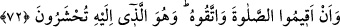
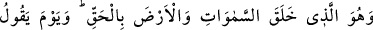
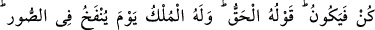
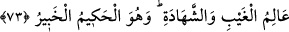

çıkan kimsenin arkadaşları vardır. Ona doğru yolu göstermek üzere “Bize gel.” derler.
Hak ile bâtılı birbirinden ayırd eden deliller apaçık ortada iken Allah’a ortak koşan
ve O’ndan başkasına tapan kimse şu üç sıfata sahib olan kimseye benzetilmiştir:
1. Onu azgın cinler ve şeytanlar aldatarak ıssız yerlerde ve çöllerde bırakmıştır.
2. Şaşkınlığından ötürü gideceği dosdoğru yolu sapıtır, ne yapacağını bilemez
haldedir.
3. Onun “Bize gel. Çölde kayboldun. Yolunu yitirdin.” diyen arkadaşları vardır. Fakat
o, onlara icâbet etmez, cin ve şeytanların peşinden gitmeyi de bırakmaz.
Cinler, latif (soyut) cisimlerdir ve muhtelif şekillere bürünürler. Havanın delikli,
gözenekli cisimlerin arasına girdiği gibi cinler de canlıların içerisine nüfûz eder.
“De ki; yol gösterme, ancak Allah’ın yol göstermesidir.” O’nun bize gösterdiği yol
sadece İslâm’dır ve onun dışındakiler ancak sapıklıktır.
Ve yine de ki: “Bize âlemlerin Rabb’ine teslim olmamız emredildi.” O’na teslim
olmakla emrolunduk.
72. “Namazı dosdoğru kılın ve Allah’tan korkun” (diye de emredildik). O,
huzuruna varıp toplanacağınız Allah’tır.
“Varıp huzûruna toplanacağınız O’dur. “Namazı kılın ve O’ndan korkun” (diye
emredildi)! İslâm olmak, ruhânî tâatlerin başıdır. Namaz, cismânî tâatlerin reisidir.
Takva ise, gereksiz olan her şeyi terk etme ve lüzumsuz davranışlardan sakınma
kabîlinden olan her şeyin başıdır.
Kıyamet gününde hesaba çekilmek üzere “Varıp huzûruna toplanacağınız O’dur.”
73. O, gökleri ve yeri hak (ve hikmet) ile yaratandır. “Ol!” dediği gün herşey
oluverir. O’nun sözü gerçektir. Sûr’a üflendiği günde hükümranlık O’nundur.
Gizliyi ve açığı bilendir ve O, hikmet sahibidir, her şeyden haberdardır.
“Gökleri ve yeri” yani ulvî ve süflî olanlar ile onlarda bulunanları “hak” ve hikmet
“ile yaratan O’dur. “Ol” dediği gün oluverir. Sözü haktır.”
Varlıklardan yaratmayı murad ettiği her şey hakkında O’nun emri, iradesi taalluk ettiği
anda olur, ne önce, ne de sonra. “Hak”, hak olduğuna şâhidlik edilen ve öyle tanınan